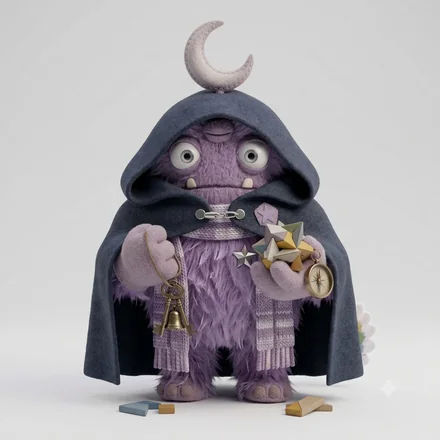

monster type
言葉になる前のものを、先に感じ取る人
モンスター名は、6軸の組み合わせにつけた分類名です。軸ごとの表現ではありません。
一言でいうと静かな確信の洞察モンスター — A（確信）× C（慎重）
INFJ-A-Cとは、見えているものの多くを口にせず、信頼した相手にだけ確かな見立てを渡す人です。重い相談や、言いにくい判断を預けられる。いっぽうで、受け止める一方で、自分の要望を言わない。
INFJ-A-C（INFJ-AC／INFJ AC）は、ベースコード INFJ に、独自軸のA（確信）とC（慎重）が重なるタイプです。64モンスターズでは「静かな確信の洞察モンスター」と呼んでいます。
人の感情や場の力学を、本人より早く察知します。理想が高く、それを静かに、しかし粘り強く形にしようとします。内側は激しく動いていても、外からは穏やかに見えるのが特徴です。
同じ確信を持ちながら、それを外に出す相手を厳しく選ぶタイプ。察知の速さと判断の揺るぎなさを、静けさの下に隠しています。頼られたときにだけ深く関わるので、信頼された相手からは絶大に頼られ、それ以外の人からは何も見ていないように扱われます。
コードの読み方は64タイプ性格診断とはに、設問と採点の作り方はこの診断についてにまとめています。
実在の人物ではなく、役割と場面の類型で書いています。
強み
重い相談や、言いにくい判断を預けられる。相手の内側まで見えていて、しかもそれを言いふらさない安心感があります。
落とし穴
受け止める一方で、自分の要望を言わない。相手に頼みごとを一つするだけで、関係が支援から対等に変わります。
同僚が無理をしていると数週間前から気づいていたのに、本人が体調を崩してから「実は気づいていた」と言うことになる。
相談されるのを待たず、「最近忙しそうだね」と見えている事実だけを声に出す。踏み込まない一言でも、相手が話しはじめる入口になります。
プロジェクトの方向がずれていると確信しているのに、まだ信用しきれていない上司には何も言わずに見送る。
相手を選ぶのは、雑談や個人的な話まででかまいません。仕事の判断は、確信があるなら相手を問わず一度は出しておきます。
家族の誰かの本心を見抜いていながら黙っていたことが、あとから分かって「なぜ言わなかったの」と責められる。
見えたことを全部言う必要はありません。「気になっていることがある」とだけ伝えておくと、黙っていたのではなく待っていたことが伝わります。
INFJ-A-Cは、好きになる相手を厳しく選び、選んだあとは長く変わりません。見えているものは多いのに、口に出すのはごくわずかです。
かみ合う相手
言葉数の少なさを冷たさと取らない相手。こちらから聞いてくれる人の前でだけ、内側が少しずつ出ていきます。
気をつけたいところ
受け止めるばかりで、自分の望みを言わない。相手に何か一つ頼むだけで、関係が支援から対等に変わります。
力を発揮しやすい環境
目的に共感でき、じっくり向き合える環境
担いやすい役割
人と組織の支援、企画、編集、対人の専門職
重い相談や難しい判断の相手役に。自分の要望も言葉にすると関係が対等になる。
INFJ-A-Cは、感じ取ったことは、渡す相手を決めてからしか出しません。黙っている時間が長いので、何も感じていない人だと思われます。
すでに近い相手とのあいだで
信頼した相手にだけ、見えているものを渡します。その精度が高いので、渡された側は強く頼るようになります。頼られる相手の数は、生涯を通じて多くありません。
まだ近くない相手とのあいだで
相手の状態は最初から見えていますが、言いません。距離を測っているあいだ、こちらからは何も起きないので、関心がないと受け取られます。
恋人としてかみ合う相手
仕事のパートナーとして組みやすい相手
6軸の重みづけから計算した目安で、実際の関係を判定するものではありません。
INFJ-A-Cは「静かな確信の洞察モンスター」です。見えているものの多くを口にせず、信頼した相手にだけ確かな見立てを渡す人です。同じ確信を持ちながら、それを外に出す相手を厳しく選ぶタイプ。察知の速さと判断の揺るぎなさを、静けさの下に隠しています。頼られたときにだけ深く関わるので、信頼された相手からは絶大に頼られ、それ以外の人からは何も見ていないように扱われます。
同僚が無理をしていると数週間前から気づいていたのに、本人が体調を崩してから「実は気づいていた」と言うことになる。プロジェクトの方向がずれていると確信しているのに、まだ信用しきれていない上司には何も言わずに見送る。家族の誰かの本心を見抜いていながら黙っていたことが、あとから分かって「なぜ言わなかったの」と責められる。
どちらも感じ取ったことを人には簡単に渡しません。INFJ-A-C は見立てに迷いがなく、選んだ相手に確かな言葉で渡します。INFJ-O-C は見立てを何度も疑い、渡す前にひとりで処理を終えてしまいます。A-C は頼られる人に、O-C は抱える人になりやすいタイプです。
目的に共感でき、じっくり向き合える環境で力を発揮しやすく、人と組織の支援、企画、編集、対人の専門職といった役割を担いやすいタイプです。INFJ-A-Cの場合は、重い相談や難しい判断の相手役に。自分の要望も言葉にすると関係が対等になる。
好きになる相手を厳しく選び、選んだあとは長く変わりません。見えているものは多いのに、口に出すのはごくわずかです。かみ合いやすいのは、言葉数の少なさを冷たさと取らない相手。こちらから聞いてくれる人の前でだけ、内側が少しずつ出ていきます。
同じものです。INFJ-A-C・INFJ-AC・INFJ AC は、いずれも同じ組み合わせを指します。